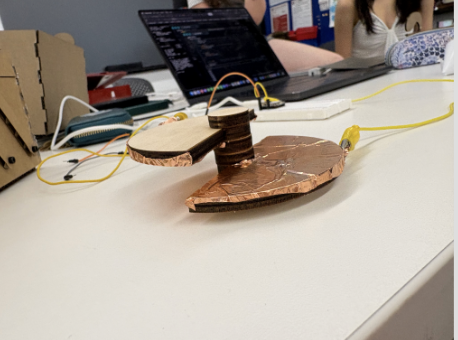
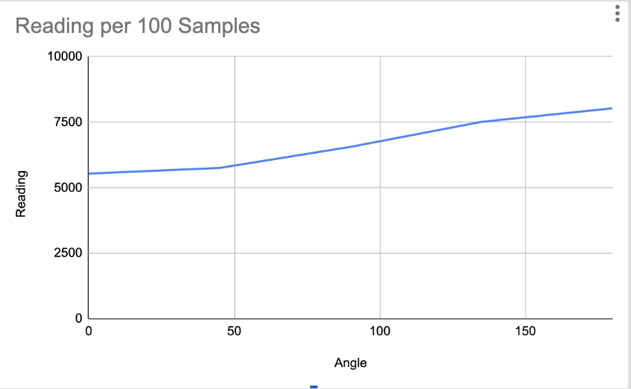
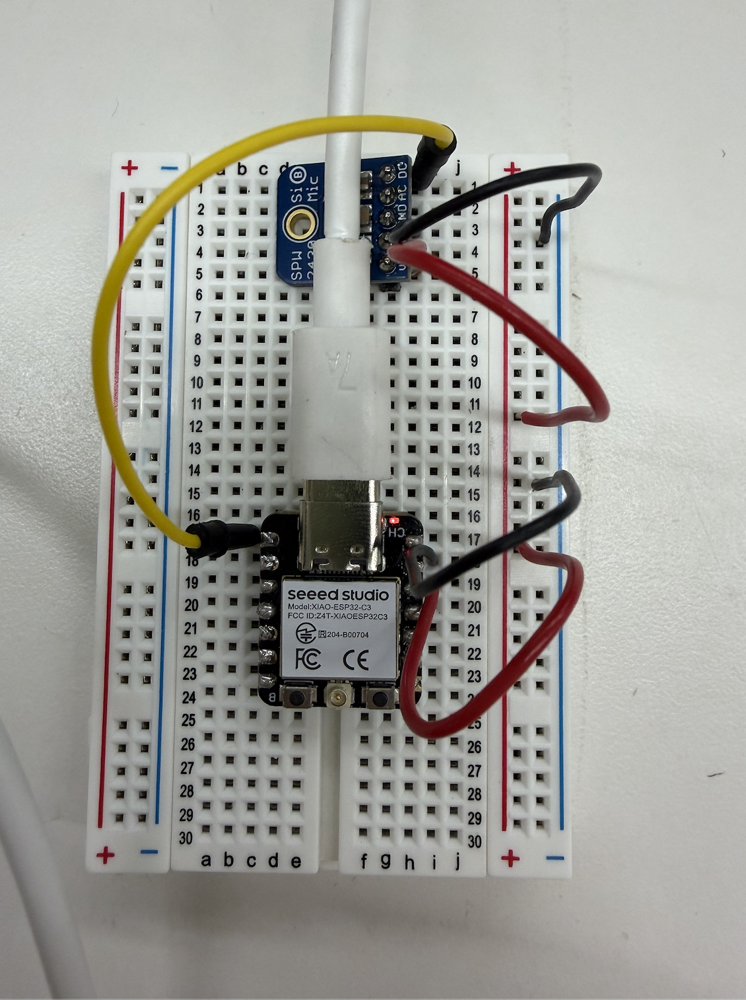
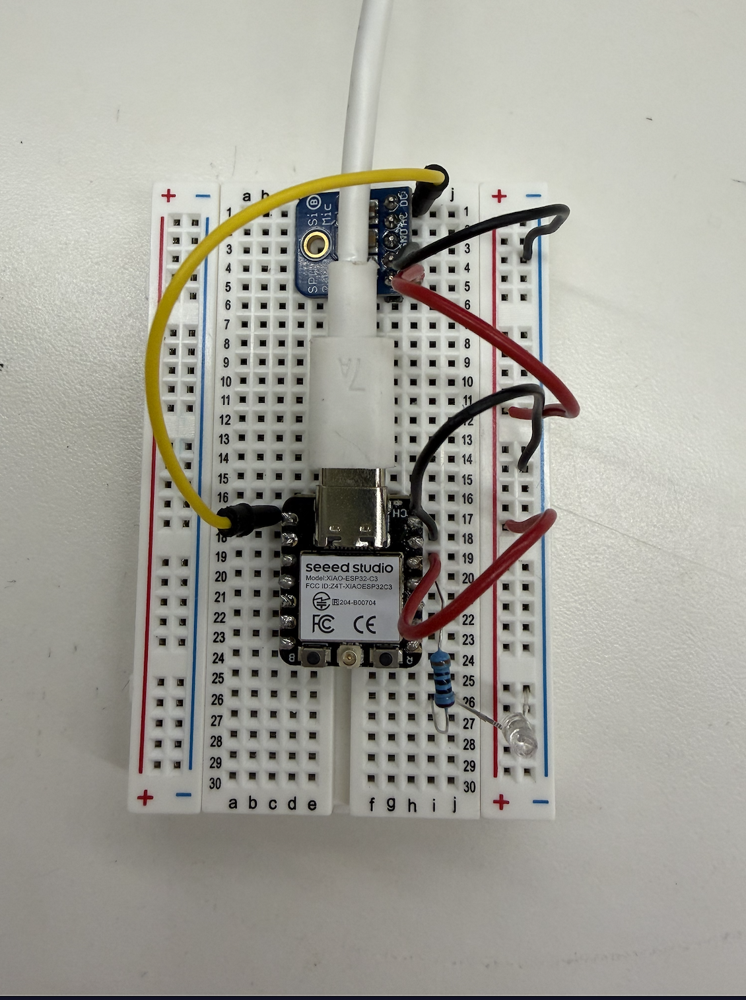

I worked with Charles, Ethan, Sofia, and Arden to create a sensor with a capacitor that would detect rotation. To do that, we covered two semicircles with copper foil that could rotate to crate more of an overlap between the two plates. This change in overlap would change the capacitence, giving us different readings. Because the rotating semicircles were far from each other, the data we gathered wasn't very useful. We then made a graph of our data.


Because my final project will include a microphone to pick up sound, I decided to calibrate a sensor that would detect sound. Even though my final project needs to detect frequency instead of just amplitude, I decided this would be a good first step. I first followed the wiring diagram on the website for the microphone, and used the coded provided. I changed some things, I used the actual analog pin name instead of just analogRead(0) because when it didn't work the first time, I thought it was because the pins were being confused. I also changed signalMin to returns values from 0 to 4095 instead of what it was set to before. After these changes, I opened up the serial plotter and each time I hit the table and produced a noise, the amplitude would jump up.
Below is what my wiring looked like, with the grounds of both the MIC and Xiao connected and the AO pin on the Xiao connected to the DC input on the MIC.

Here is the link to the first iteration of my code.
Then, the next part of the assingment was to add an output, so I chose an LED. I connected the LED pin to ground, then in series with a resistor. This would make it so that when a loud enough sound was played, the LED woudl light up.

Then, to calibrate the sensor, I used a cello drone on my computer, and held my phone which acted like a decible meter and my sensor up to my computer's speakers. I then read what was printed when I opened serial monitor in Arudion IDE and the decibels on my phone. I did this a couple times, each time changing the volume on my computer. I then plotted these points on a graph, and found a line of best fit. Even though the relatiionship was probably not supposed to be linear, my computer had a limited number of decibles it could output, so I had a limited number of data points. I then mapped it to turn the readings read from the sensor into decibles.
Here is the link to the final iteration of my code.